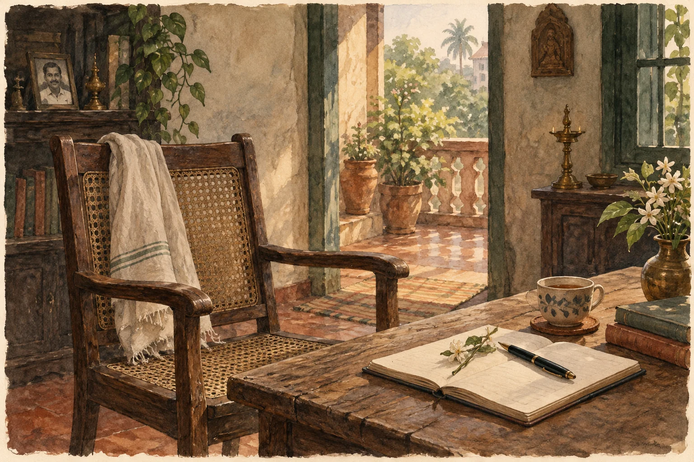

ମୂଳ କବିତା · ଓଡ଼ିଆ
ହାପି ଫାଦର୍ସ ଡେ

*
ତୁମେ କହିଲ,
“ଚାଲ୍ ବୁଲି ଆସିବା ପିଲା ଘରୁ,
ତୋର ଘର ପସନ୍ଦ ହେଲେ କଥା ଆଗକୁ ନେବା..
ଝିଅ ବାହା ହେଲେ ଝଡ଼ିଯାଏ ବାପାର ନିଶ..”
ମୁଁ ସତ ବୋଲି ଭାବିଲି,
ହସି ହସି ଗଡ଼ିଗଲେ ମାଁ ଆଉ ମାଉସି
ତୁମେ ଚାଲିଗଲା ପରେ
ହଷ୍ଟେଲରୁ ଫେରୁଥିବା ତୁମ ଝିଅକୁ
ମଝି ରାସ୍ତାରେ ଅଟକାଇ ପ୍ରଶ୍ନ କରନ୍ତି ଲୋକେ
ଏବେ କଣ କରୁଛୁ, ଆଗକୁ କଣ କରିବୁ ଇତ୍ୟାଦି..
କିଛି କଥା ଘରେ ଆସି କୁହେ,
କିଛି ନିଜେ ସହିଯାଏ, ବାପ ନ ଥିବା ଝିଅ
ବାପା ଚାଲିଗଲା ପରେ
ମୁରବି ହେଇ ଯାଆନ୍ତି
ମାଁ, ଭାଇ, ପରିବାର, ସମାଜ
ଚାକିରି ମିଳେ, ପ୍ରେମିକ ମିଳେ, ସ୍ଵାମୀ ମିଳେ
ସଂସାର ହୁଏ
କିନ୍ତୁ କେହି କେବେ କାନ ଦିଅନ୍ତିନି ଶୁଣିବାକୁ
ଝିଅର ମନ କଥା
ବାପ୍ ନହିଁ ତୋ ନାମ୍ ନହିଁ
ମାଁ ନହିଁ ତୋ ଗାଁ ନହିଁ..
ଜଗତ ମନା, ବାପ ନ ଥିବା ଝିଅକୁ
ପ୍ରତିପାଦରେ ଅଙ୍କୁଶ
ବା ବିଗିଡ଼ି ଯାଏ ଝିଅ
ସ୍ୱେଚ୍ଛାଚାରି କହିବାକୁ ହାଜିର୍ ହଜାରେ ମୁହଁ
ମୋ କବିତା ଲେଖିବାରେ ବି ଆପତ୍ତି ତାଙ୍କର!
ବାପା ତୁମେ ମୋତେ କହିବାର ଥିଲା,
ପୃଥିବୀଟି ଗୋଟେ ବାପ ନ ଥିବା ଝିଅ..
କଣ ହୁଏ ବାପ ନ ଥିବା ଝିଅ ମାନଙ୍କର -
ହଠାତ୍ କେମିତି
ପଥର ହେଇଯାଏ ମନ୍ଦିରର ଦିଅଁ
ଅନ୍ଧାର କେମିତି ଭୟଦିଏ
ଏକା ଦେଖିଲେ କେହି ଦେହ ଛୁଇଁବାକୁ ହାତ ବଢ଼ାଏ
ଆଖିରୁ କେମିତି ଖସି ଯାଏ ଖୁସି, ଦମ୍ଭ ଆଉ ଗର୍ବ
ଅଜାଣତରେ ଦଳି ହେଇଯାଏ ଆତ୍ମବିଶ୍ବାସ
କେମିତି ହଜିଯାଏ ଆଖିରୁ ସ୍ଵପ୍ନ
ଧକ୍କା ଖାଇ, ଝୁଣ୍ଟି ପଡ଼ି, ନିଜେ ଉଠି ଚାଲିବାକୁ ହୁଏ,
କେମିତି ରାସ୍ତା ତିଆରିବାକୁ ହୁଏ ନିଜେ!
*
_ଶକୁନ୍ତଳା
ମୂଳ ପ୍ରକାଶନ ପଢ଼ନ୍ତୁ ↗
କବିତାଗୁଡ଼ିକ ମୂଳ ଭାଷାରେ ରହିଛି। ଭାଷା ବଦଳାଇଲେ ୱେବ୍ସାଇଟ୍ର ପରିଚୟ ଓ ନିର୍ଦ୍ଦେଶ ବଦଳିବ।